Проектный семинар «Сбор и систематизация данных на примере территорий жилой застройки»
Модуль 1 · занятие 4
26
Образовательная программа:
Городское планирование
Средовой анализ придомовых территорий: проблемы и предпосылки
Коньково, территория №2 · Команда 2
Команда 2
Москва 2026
Проектный семинар · модуль 1
Занятие 4
сл.1
Команда
01
02
03
04
05
06
01
Степанов Вадим
оформление и дизайн, QGIS, AutoCAD, итоговая презентация
02
Разумов Никандр
QGIS, AutoCAD, таблицы, доработка идей
03
Татулин Никита
оформление, QGIS, AutoCAD, таблицы
04
Абдрахимов Рашит
QGIS, таблицы, доработка идей
05
Бартенев Кирилл
полевой выход и фото, таблицы, анализ
06
Кудинова Софья
тимлид: QGIS, таблицы, обстановка в команде
Средовой анализ придомовых территорий жилой застройки
Команда 2
Москва 2026
Проектный семинар · модуль 1
Занятие 4
сл.2
0
500
1000 м
Наша территория
м. «Беляево»
31 га
площадь территории
52
ячейки — единицы анализа
91
здание, по 46 есть паспорт
28 из 30
домов с известным материалом стен — панельные
Коньково, территория №2
Квартал между Профсоюзной улицей и улицами Миклухо-Маклая, Генерала Антонова и Введенского. Один из выходов метро «Беляево» открывается прямо на территорию — через дворы постоянно идут люди к метро и обратно.
30 из 38 домов с известной датой построены в 1968–1974 годах: девятиэтажки серий II-57 и 1605-АМ и башни в 12–17 этажей. Внутри — две школы, детский сад и большие открытые дворы.
Средовой анализ придомовых территорий жилой застройки
Команда 2
Москва 2026
Вступление
Проектный семинар · модуль 1
Занятие 4
сл.3
Что искали и как считали
Задача занятия 4 — найти нарушения по 11 пунктам методики, понять, где они скапливаются, и что в квартале уже работает.
01
Данные
Полевой выход с QField, топооснова и чертёж ячеек сведены в слои ГИС.
02
Ячейки
52 ячейки по домам, заборам и дорожкам; в анализе 42.
Для каждой ячейки — нарушен пункт или нет; пороги из методики или наши.
05
Сводный счёт
Число нарушенных пунктов; по нему три класса ячеек.
06
Проблемы и опоры
Ядро проблемных дворов, проверка устойчивости и предпосылки.
42
ячейки в анализе
11
пунктов проверки
156
нарушений во всех ячейках
8
ячеек с высоким счётом
Средовой анализ придомовых территорий жилой застройки
Команда 2
Москва 2026
Вступление
Проектный семинар · модуль 1
Занятие 4
сл.4
Полевой выход и данные
Объект
Точек
Бортовой камень
92
Здания
65
Входы во дворы
61
Откосы
58
Ограждения
34
Подпорные стенки
18
Прочее
9
Всего
341
Что сделали на месте
Обошли квартал с QField: входы, заборы, откосы, бортовой камень и здания — 341 точка и 282 фото. В субботу считали пешеходов на 25 точках.
Из нового чертежа ячеек взяли озеленение, площадки и стоянки, остальное — из наших слоёв.
фото: въезд во двор
фото: откос у дома
фото: ограждение школы
фото: арка в доме
Средовой анализ придомовых территорий жилой застройки
Команда 2
Москва 2026
Вступление
Проектный семинар · модуль 1
Занятие 4
сл.5
11
11 пунктов проверки
Каждую ячейку проверяли по 11 пунктам методики: пункт либо нарушен, либо нет.
Счёт ячейки — число нарушенных пунктов, от 0 до 11.
Классы ячеек
0–3
низкий
4–5
средний
6 и больше
высокий
Пункт
Что проверяем
Правило для ячейки
Ячеек
1.1
Форма и размеры двора
Балл комфорта ниже 0,67
28
1.2
Неорганизованный вход
Неоформленный вход до 8 м от ячейки
16
1.3
Вне границ двора
Ячейка вне зафиксированных границ
8
1.4
Изношенное здание
Износ от 40 % до 8 м от ячейки
30
2.1
Загрузка с заездом грузовиков
Зоны загрузки от 50 м² в ячейке
15
2.2
Опасный открытый объект
Опасный объект до 6 м от ячейки
12
2.3
Совмещение потоков
От 20 м общего проезда с высокой нагрузкой
11
3.1
Транзит через двор
От 20 м высокого транзита у подъездов
7
3.2
Сервис с внешним транзитом
Магазин или сервис у людного транзита
1
3.3
Площадка без присмотра
Площадка в ближней зоне вне контроля
1
3.4
Нет контроля или заброшено
Спорный контроль от 5 %, без контроля от 50 %, заброшено от 25 %
27
Средовой анализ придомовых территорий жилой застройки
Команда 2
Москва 2026
Вступление
Проектный семинар · модуль 1
Занятие 4
сл.6
Ячейки и границы анализа
52 ячейки — участки между домами, заборами и дорожками. В анализе 34 ячейки в границах дворов и 8 полос с подъездами вдоль улиц; 10 краевых полос — вне анализа.
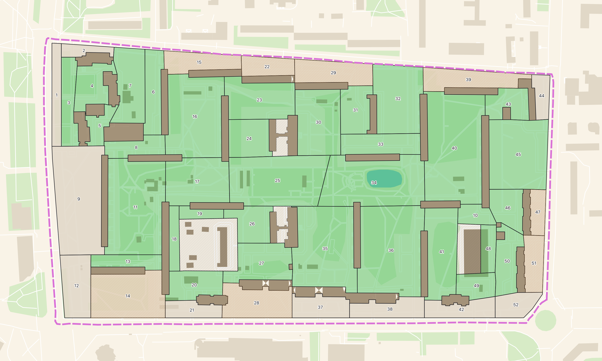
0
100
200 м
Легенда
полосы с подъездами — 8
ячейки в границах двора — 34
вне границ двора
исключённые участки
Ячейка — единица счёта: все 11 пунктов проверяем для каждой из 42 ячеек.
Средовой анализ придомовых территорий жилой застройки
Команда 2
Москва 2026
01 Пространство
Проектный семинар · модуль 1
Занятие 4
сл.7
Входы во дворы
Вход — место, где улица переходит во двор. Организованный вход заметно оформлен: арка, ворота, калитка или явный разрыв в застройке.
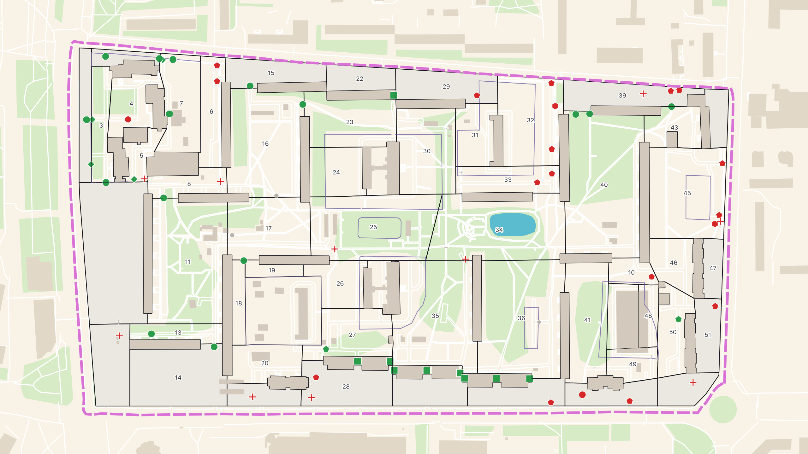
0
100
200 м
организован
не организован
внутренний проход
арка
ворота
калитка
разрыв в застройке
въезд
разрыв в насаждениях
не зафиксирован
ограждения
вне границ двора
62
внешних входа
30
не организованы
Способ фиксации: оформлен / нет
въезд
2 / 16
не зафиксирован
0 / 10
разрыв в застройке
9 / 1
арка
9 / 0
ворота
6 / 0
калитка
6 / 0
разрыв в зелени
0 / 3
Вывод
Хуже всего въезды: 16 из 18 — просто проезжая часть. Неоформленные входы — в 16 ячейках (п. 1.2).
Средовой анализ придомовых территорий жилой застройки
Команда 2
Москва 2026
01 Пространство
Проектный семинар · модуль 1
Занятие 4
сл.8
Вертикальные пропорции ячеек
Отношение площади фасадов к площади ячейки. Высота этажа — 3 м, 45 построек без паспорта — 1 этаж.
высокий, 1,4–2,0
средний, 0,6–1,4
низкий
1,1
2,3
2,7
0,8
0,6
0,9
0,7
0,6
1,2
0,4
0,7
0,6
0,4
1,6
1,2
0,8
0,9
0,7
0,5
0,1
0,4
0,4
0,6
0,5
0,3
0,2
0,3
0,8
0,2
0,5
0,5
0,8
0,6
0,9
1,2
0,3
1,2
1,5
0,4
0,5
0,7
0,9
Средовой анализ придомовых территорий жилой застройки
Команда 2
Москва 2026
Комфортных дворов — 14 из 42
Три критерия методики по 0–2 балла: пропорции, замкнутость, размер. Ячейка комфортна, если набирает от 0,67 возможного.
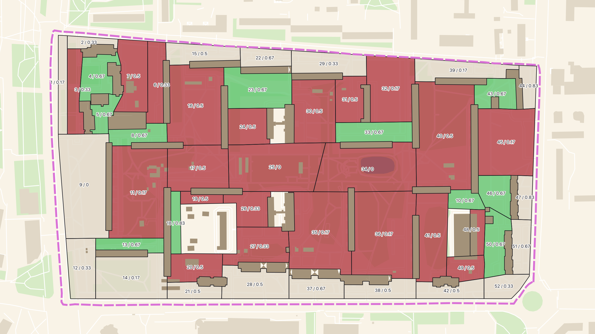
0
100
200 м
комфортная
некомфортная
вне анализа
14 из 42
ячеек комфортны
Пропорции
19
21
Замкнутость
5
28
9
Размер до 140 м
28
14
высокий
средний
низкий
Вывод
Проигрывают большие открытые дворы между длинными домами. Неудачная форма двора (п. 1.1) — у 28 ячеек.
Средовой анализ придомовых территорий жилой застройки
Команда 2
Москва 2026
01 Пространство
Проектный семинар · модуль 1
Занятие 4
сл.10
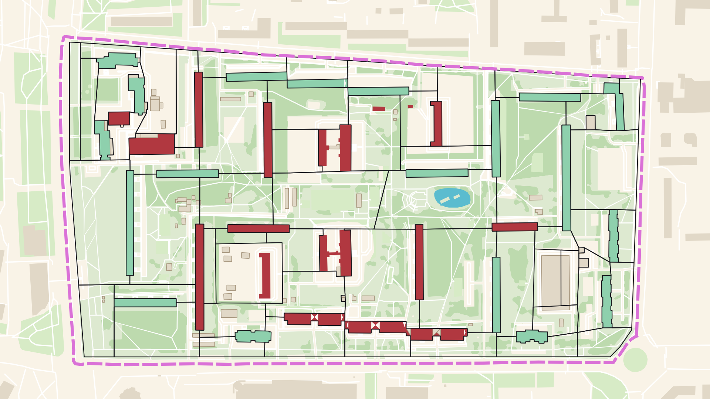
0
200
400 м
Износ зданий
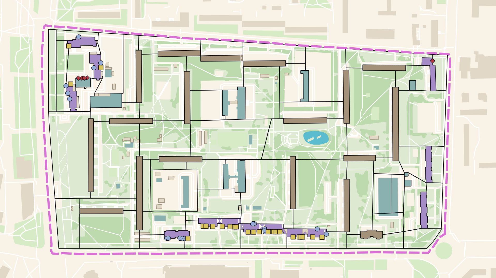
0
200
400 м
Бизнес и тип зданий
Здания: износ и бизнес
91 здание; паспорт — год, серия, материал стен, этажность — есть у 46. Остальные — гаражи, павильоны, пристройки.
14
зданий с износом от 40 %
6 — по паспорту, 8 — наша оценка по году и материалу. Среди них обе школы и детский сад.
51
объект бизнеса
19 встроенных, 27 встроенно-пристроенных, 5 отдельных. 46 обслуживают жителей.
Износ — карта сверху
40 % и более
менее 40 %
нет данных
Бизнес — карта снизу
встроенный
встроенно-пристроенный
отдельно стоящий
Вывод
Износ — самый частый пункт: изношенное здание рядом у 30 ячеек из 42 (п. 1.4).
Средовой анализ придомовых территорий жилой застройки
Команда 2
Москва 2026
01 Пространство
Проектный семинар · модуль 1
Занятие 4
сл.11
Озеленение, стоянки и загрузка
Озеленение и стоянки — из нового чертежа ячеек, разделены по-старому на газон и деревья. 6 стоянок появились впервые, у 3 изменился контур.
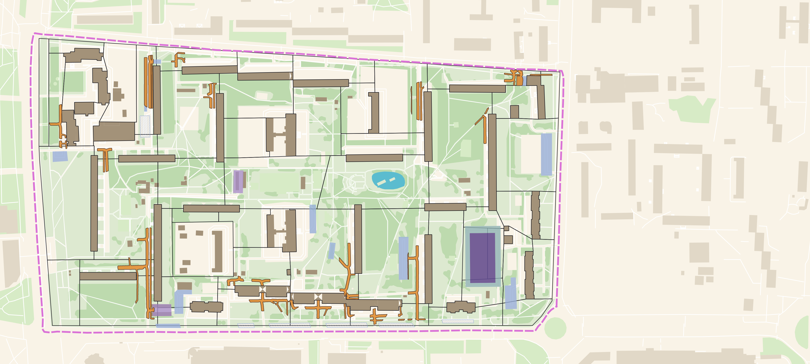
0
100
200 м
Зоны загрузки
открытая
гаражи
вокруг здания-паркинга
здание-паркинг
открытая, найдена по чертежу
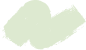
трава
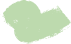
деревья
18,9 га
газонов и деревьев — больше половины площади квартала
газон 11,3 га
деревья 7,6 га
21
стоянка, 1,5 га: 17 открытых, 2 гаражные, паркинг и площадка у него
Вывод
Зелени много, но стоянки и зоны загрузки у магазинов заходят во дворы и занимают проезды (п. 2.1, 2.3).
Средовой анализ придомовых территорий жилой застройки
Команда 2
Москва 2026
02 Функции
Проектный семинар · модуль 1
Занятие 4
сл.12
Опасные объекты и загрузка
Опасный открытый объект — место, рядом с которым неприятно: мусорные площадки, пивные и алкомаркеты с выходом во двор.
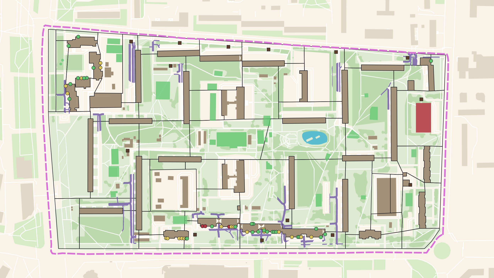
0
100
200 м
мусорные площадки
бизнес: опасный
бизнес: нейтральный
бизнес: благоприятный
площадка: благоприятная
площадка: опасная
зоны загрузки
16
опасных объектов, 14 из них — мусорные площадки
28
зон загрузки, 0,75 га
Вывод
Мусорки как опасные — наше допущение. Без него п. 2.2 остаётся в 1 ячейке, а высоких ячеек 4 вместо 8.
фото: мусорная площадка у дома
Средовой анализ придомовых территорий жилой застройки
Команда 2
Москва 2026
02 Функции
Проектный семинар · модуль 1
Занятие 4
сл.13
Сети и пешеходы на проезде
Дерево путей от подъездов к выходам: 4,3 км пешком и 4,2 км на машине. Тротуаров мало: 1,8 км пеших путей идут прямо по проезду, 0,8 км — по тротуару.
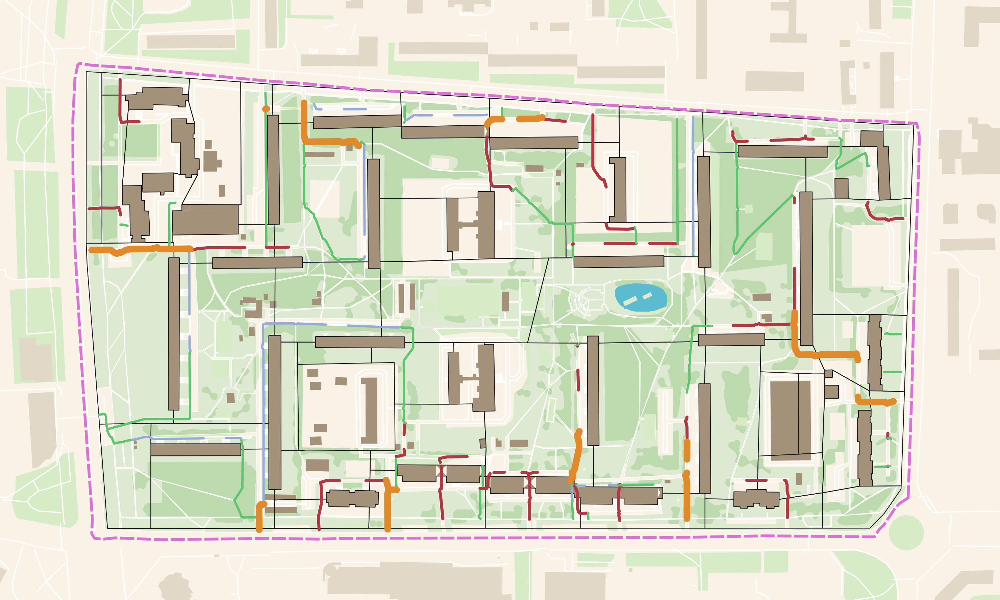
0
100
200 м
Легенда
совмещение потоков
отдельно от проезда
по тротуару
по проезжей части
605 м
совмещения потоков в 11 ячейках (п. 2.3)
Средовой анализ придомовых территорий жилой застройки
Команда 2
Москва 2026
02 Функции
Проектный семинар · модуль 1
Занятие 4
сл.14
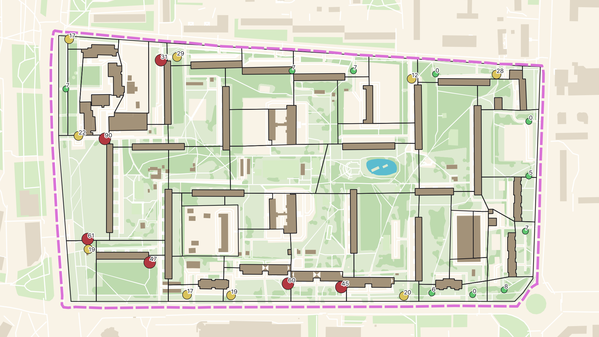
0
200
400 м
Потоки людей
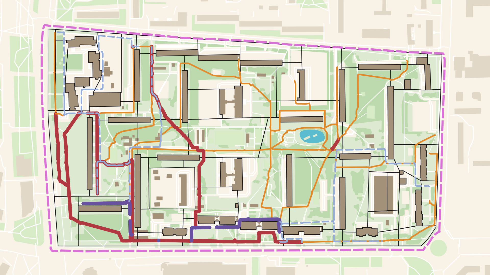
0
200
400 м
Транзит
Потоки людей и транзит
В субботу считали пешеходов на 25 точках. В будний день, по нашей оценке, людей в 2–3 раза больше.
Самые людные точки, чел./ч
точка 25
90
точка 1
61
точка 6
60
точка 3
47
точка 7
45
463
участка транзита, 144 — с высокой загрузкой
поток высокий
поток средний
поток низкий
пешеходный, высокая
пешеходный, низкая
транспортный, высокая
транспортный, низкая
Вывод
Транзит у подъездов — 1 046 м в 7 ячейках (п. 3.1): люди идут сквозь дворы под окнами.
Средовой анализ придомовых территорий жилой застройки
Команда 2
Москва 2026
03 Люди и контроль
Проектный семинар · модуль 1
Занятие 4
сл.15
Половина земли без присмотра
Контроль — окна, подъезды и люди на дорожках. Центры больших дворов лежат дальше 30 м от подъездов, туда никто не смотрит.
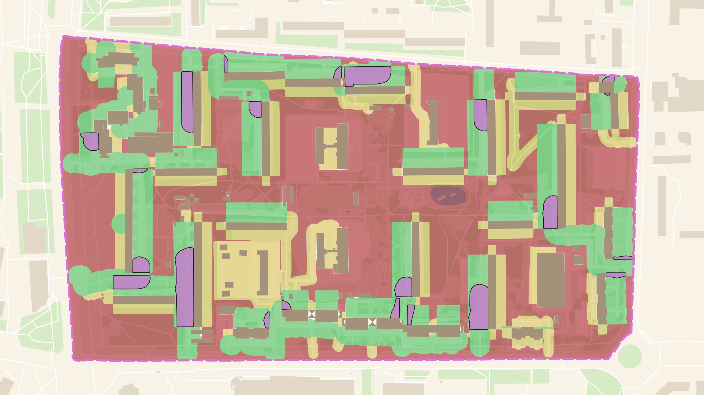
0
100
200 м
конкуренция контроля
контролируемая
частично контролируемая
неконтролируемая
Свободная территория
33 %
18 %
49 %
под контролем
частично
без контроля
активный
пассивный
жилые дома
29
зон АЖ
96
зон ПЖ
общественные пути
18
зон АП
36
зон ПП
29 из 30
площадок стоят на неконтролируемой земле; нарушение (п. 3.3) — одна, в ближней зоне
Средовой анализ придомовых территорий жилой застройки
Команда 2
Москва 2026
03 Люди и контроль
Проектный семинар · модуль 1
Занятие 4
сл.16
Освоенность дворов
Участок освоен, если обустроен (газон, деревья, покрытие, площадка) и используется (у подъезда, у людной дорожки, по наблюдениям).
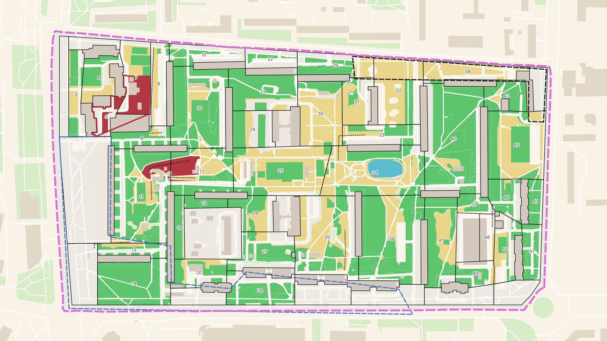
0
100
200 м
заброшенный участок (обход)
много людей
мало людей
откосы и подпорные стенки
освоенная
частично освоенная
неосвоенная (заброшенная)
не оценивается
используется
да
нет
обустроен
да
нет
11,7 га
освоено
4,9 га
частично
0,6 га
частично
0,5 га
заброшено
0,36 га
заброшено из 9,3 га неконтролируемой земли — двор живёт и без присмотра
Средовой анализ придомовых территорий жилой застройки
Команда 2
Москва 2026
03 Люди и контроль
Проектный семинар · модуль 1
Занятие 4
сл.17
Пространственно-планировочные проблемы
Самые частые нарушения квартала: изношенное здание рядом — 30 ячеек, неудачная форма двора — 28. Неоформленные входы — 27 узлов в 16 ячейках.
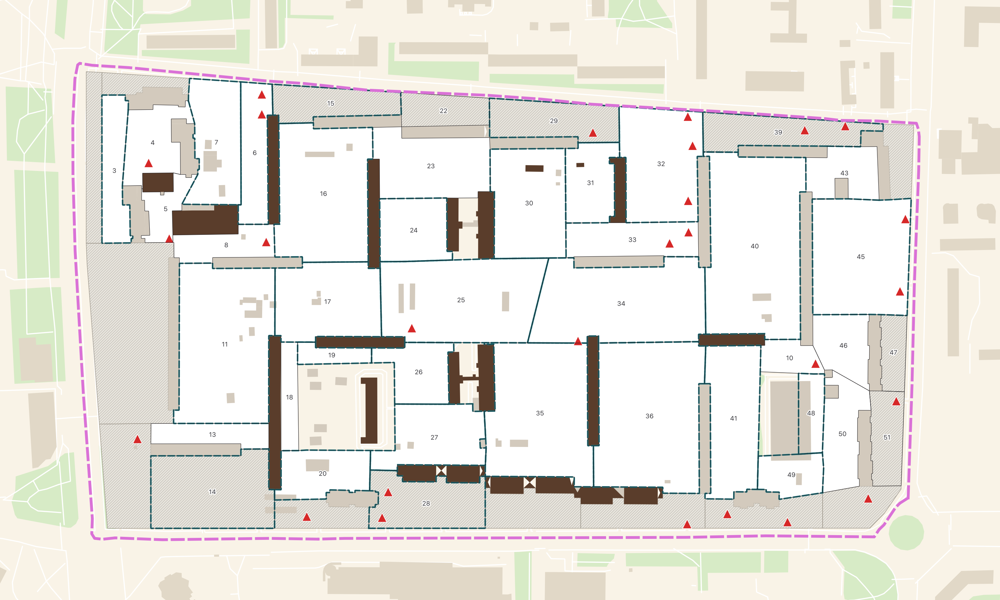
0
100
200 м
Легенда
1.1 неудачная форма двора — 28
1.2 неорганизованный вход — 16
1.3 вне границ двора — 8
1.4 износ здания от 40 % — 30
Число — ячеек с нарушением.
Средовой анализ придомовых территорий жилой застройки
Команда 2
Москва 2026
04 Проблемы
Проектный семинар · модуль 1
Занятие 4
сл.18
Функционально-планировочные проблемы
Загрузка с заездом грузовиков — 28 зон в 15 ячейках, опасные объекты рядом — у 12 ячеек, пешеходы на проезде — 605 м в 11 ячейках.
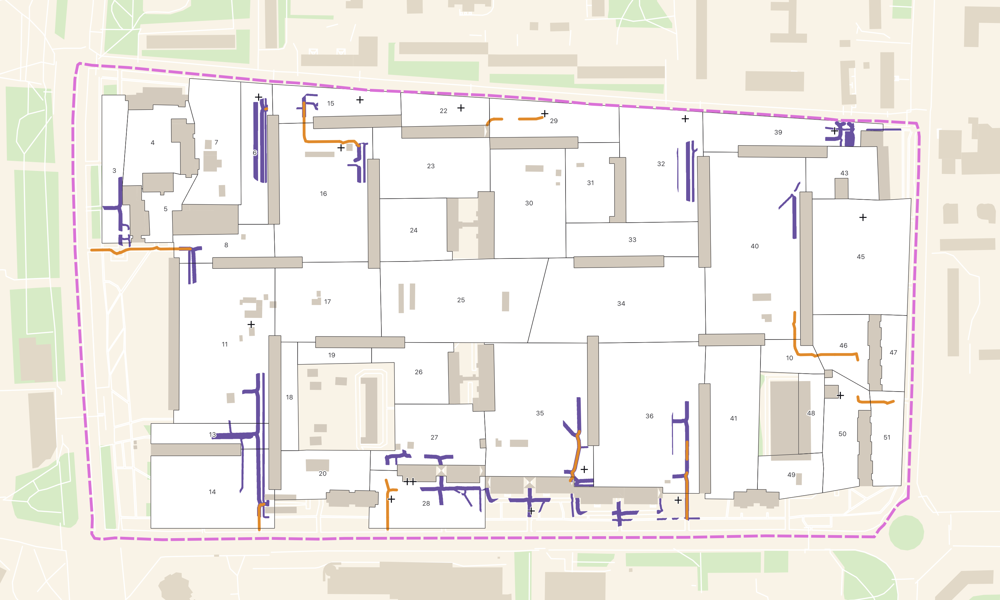
0
100
200 м
Легенда
2.1 загрузка — 15
2.2 опасный объект — 12
2.3 пешеходы на проезде — 11
Число — ячеек с нарушением.
Средовой анализ придомовых территорий жилой застройки
Команда 2
Москва 2026
04 Проблемы
Проектный семинар · модуль 1
Занятие 4
сл.19
Социально-планировочные проблемы
Транзит у подъездов — 7 ячеек, сервис с транзитом и площадка без присмотра — по одной. Пункт 3.4 нарушен в 27 ячейках и почти не различает дворы.
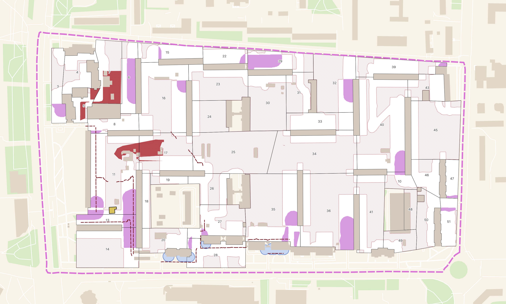
0
100
200 м
Легенда
3.1 транзит через двор — 7
3.2 сервис с транзитом — 1
3.3 площадка без присмотра — 1
3.4 без контроля — 17
3.4 заброшенная земля — 2
3.4 спорный контроль — 13
3.4 — по любому из трёх правил.
Средовой анализ придомовых территорий жилой застройки
Команда 2
Москва 2026
04 Проблемы
Проектный семинар · модуль 1
Занятие 4
сл.20
Сводный счёт
Сложили нарушенные пункты по каждой ячейке: 156 нарушений на 42 ячейки — почти четыре на двор.
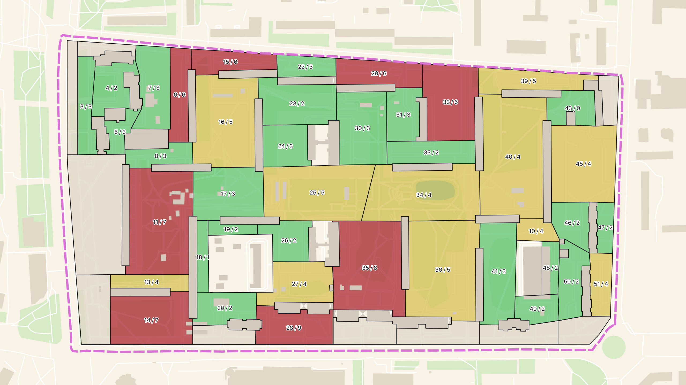
0
100
200 м
высокий (≥ 6)
средний (4–5)
низкий (0–3)
вне анализа
8
высокий, 6+
11
средний, 4–5
23
низкий, 0–3
1.1
1.2
1.3
1.4
2.1
2.2
2.3
3.1
3.2
3.3
3.4
№28
9
№35
8
№11
7
№14
7
№6
6
№15
6
№29
6
№32
6
Ячейка 28 нарушает 9 пунктов из 11, 35 — 8, 11 и 14 — по 7.
Средовой анализ придомовых территорий жилой застройки
Команда 2
Москва 2026
04 Проблемы
Проектный семинар · модуль 1
Занятие 4
сл.21
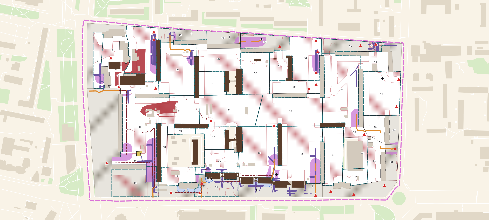
0
100
200 м
Все проблемы планировки дворов
1.1 неудачная форма двора
1.2 неорганизованный вход
1.3 вне границ двора
1.4 износ здания от 40 %
2.1 загрузка
2.2 опасный объект
2.3 пешеходы на проезде
3.1 транзит через двор
3.2 сервис с транзитом
3.3 площадка без присмотра
3.4 без контроля
3.4 заброшенная земля
3.4 спорный контроль
Средовой анализ придомовых территорий жилой застройки
Команда 2
Москва 2026
04 Проблемы
С чего начинать: четыре двора
Ячейки 28, 35, 11 и 14 остаются в высоком классе при любых порогах и без допущений команды.
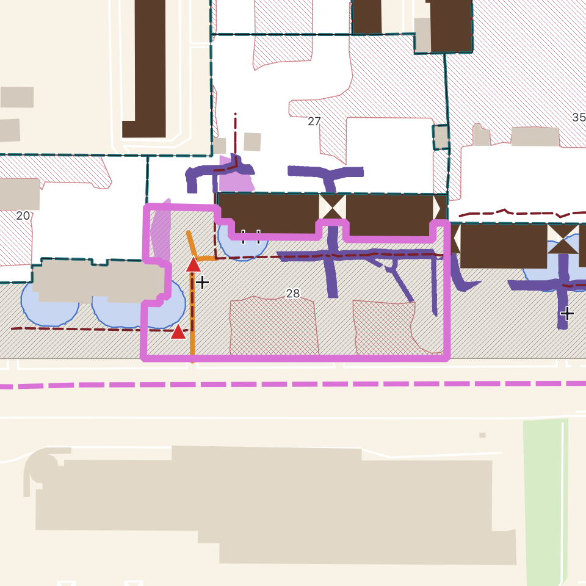
Ячейка 28
9/11
1.1 форма двора
1.2 неоформленный вход
1.3 вне границ двора
1.4 изношенное здание
2.1 загрузка
2.2 опасный объект
2.3 пешеходы на проезде
3.1 транзит у подъездов
3.2 сервис с транзитом
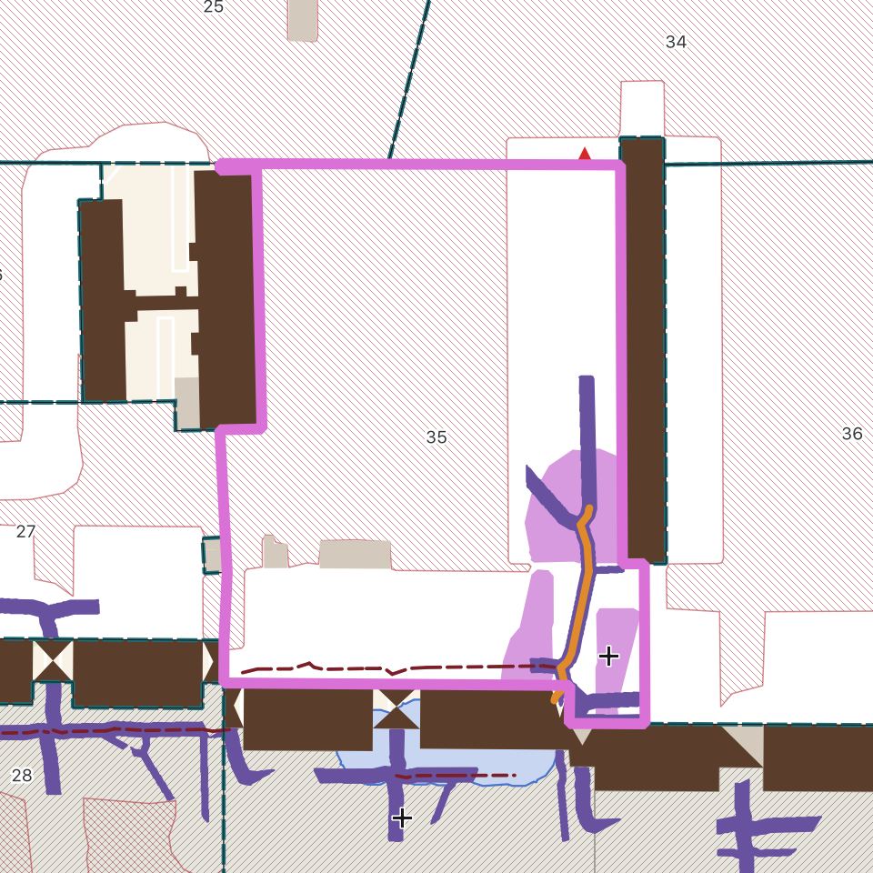
Ячейка 35
8/11
1.1 форма двора
1.2 неоформленный вход
1.4 изношенное здание
2.1 загрузка
2.2 опасный объект
2.3 пешеходы на проезде
3.1 транзит у подъездов
3.4 без контроля
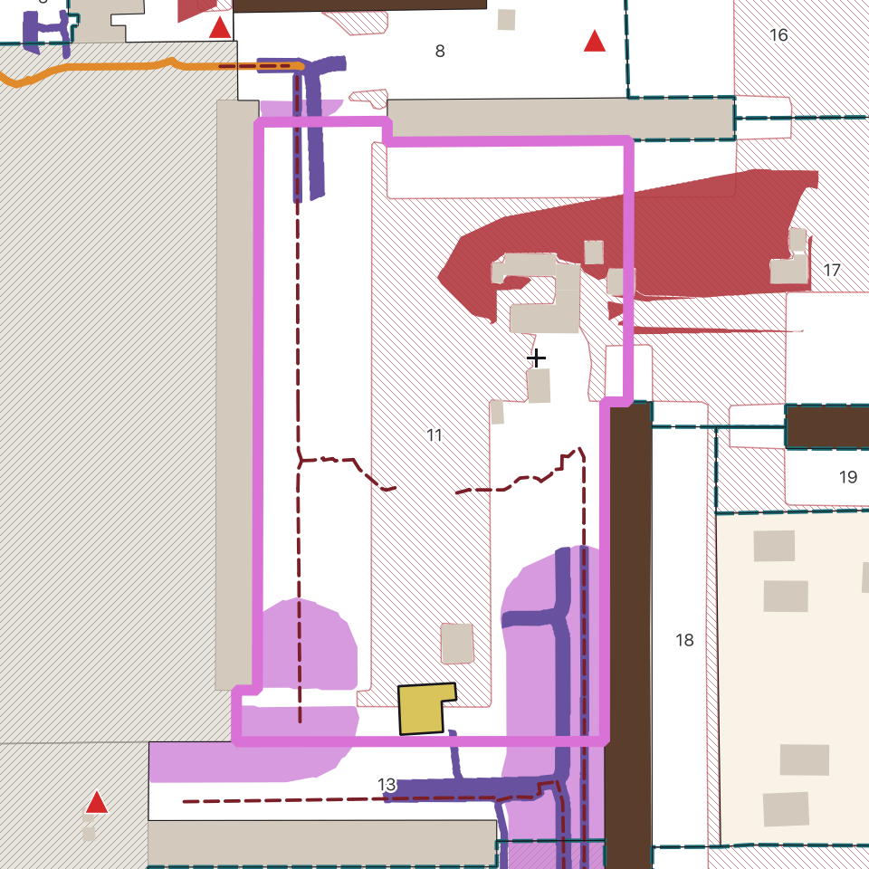
Ячейка 11
7/11
1.1 форма двора
1.4 изношенное здание
2.1 загрузка
2.2 опасный объект
3.1 транзит у подъездов
3.3 площадка без присмотра
3.4 без контроля
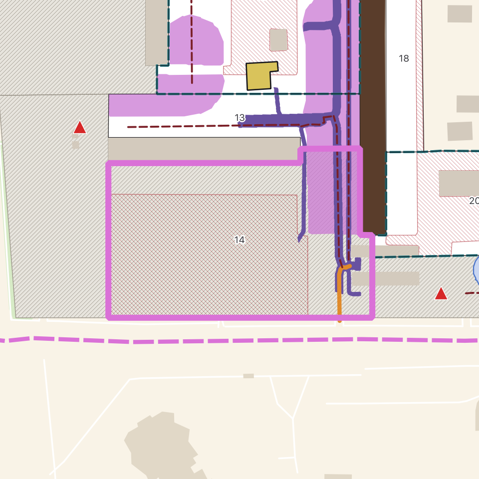
Ячейка 14
7/11
1.1 форма двора
1.3 вне границ двора
1.4 изношенное здание
2.1 загрузка
2.3 пешеходы на проезде
3.1 транзит у подъездов
3.4 без контроля
Средовой анализ придомовых территорий жилой застройки
Команда 2
Москва 2026
04 Проблемы
Проектный семинар · модуль 1
Занятие 4
сл.23
Насколько надёжен счёт
Пороги и часть данных — наш выбор. Мы двигали каждый порог в обе стороны и снимали допущения по одному и все сразу.
Ядро — ячейки 28, 35, 14 и 11 — не меняется. Сильнее всего влияют мусорные площадки и износ по нашей оценке.